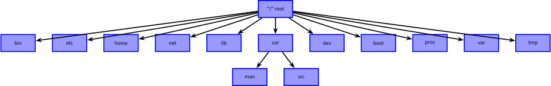

Travaux Pratiques - TP
Système de fichiers sous UNIX
Consigne 1
Ce TP fait l'objet d'une notation. Vous travaillerez seul et vous devrez rendre
un compte-rendu. Les TP sont à remettre pour le mardi 14 octobre 2025 sur EDUNAO.
Vous devez envoyer un fichier au format PDF qui devrait être nommé avec la convention
suivante : NOM1-TP1.pdf.
Note
Les étudiants possédant une machine avec Windows comme OS devraient utiliser une
des solutions proposées dans les deux liens suivants, ou proposer une solution alternative, pour émuler un
système UNIX.
Introduction
Le système de gestion de fichiers (SGF) d'Unix procure à l'utilisateur
un moyen efficace pour conserver et manipuler aisément des
informations. En outre, il offre un système de sécurité, notamment sur
les droits d'accès aux fichiers.
Il existe trois principaux types de fichiers :
- les fichiers de données (ordinary files),
- les répertoires (directories),
- les périphériques (devices).
Ce SGF est simple et permet de manipuler de manière uniforme les
fichiers comme les périphériques. Sous Unix, on a coutume de dire que
"tout est fichier !". Par ailleurs, le SGF d'Unix ne fait aucune
supposition sur l'organisation interne des fichiers. Tout fichier est
vu comme une simple suite d'octets.
Le système de gestion de fichiers utilise une structure hiérarchique
(arborescence) composée de répertoires et de fichiers. Chaque
répertoire contient des fichiers ordinaires ou d'autres répertoires.
Voici un exemple classique d'organisation d'un SGF Unix.

- bin : les programmes exécutables standards
- etc : les fichiers de configuration
- home : les utilisateurs "locaux"
- net : les utilisateurs "réseaux"
- lib : les bibliothèques standard pour la compilation
- man : les pages de manuel (aide en ligne)
- src : les sources des programmes
- dev : les fichiers spéciaux représentant les périphériques
- tmp : les fichiers temporaires
- ...
Consigne 2
Pour chaque question, vous devez fournir le commande tapée et la réponse renvoyée par le shell.
Exercice 1 : Les répertoires et les fichiers
Les répertoires
Il existe un certains nombre de répertoires particuliers :
- / désigne la racine de l'arborescence,
- . désigne le répertoire courant,
- .. désigne le répertoire père du répertoire courant,
- ~ désigne votre répertoire utilisateur (home directory).
La variable $HOME pointe également sur votre répertoire utilisateur,
également appelé répertoire de connexion. Il s'agit en quelque sorte de
votre maison, là où vous pouvez stocker vos fichiers.
-
question 1.1 : Pour afficher le contenu de la variable HOME, dans un terminal
tapez la commande :
Remarque
Le symbole $ placé devant le nom de la variable signifie
que vous souhaitez accéder à la valeur de la variable.
Nom de Fichier
Les noms de fichiers sont limités à 256 caractères sous Unix. De
préférence, n'utilisez pas d'espace mais "_" à la place. Evitez les
caractères spéciaux (&, @, $, #,
...). Le plus simple est de toujours
utiliser des lettres et des chiffres.
Attention le système Unix fait la différence entre majuscules et
minuscules ! Les fichiers toto, Toto et TOTO ont des
noms différents.
L'extension ou suffixe (optionnel) fait partie du nom, il commence par
"." et n'a pas de limite de taille (.txt, .html,
.tar.gz, .ps.gz,
etc.). Il permet d'indiquer le type du fichier. Il ne s'agit que d'une
convention sous Unix.
Pour connaître le type d'un fichier, il faut utiliser la commande
file. Par exemple :
Commandes et Aide en Ligne
Voici la syntaxe classique d'une commande Unix :
où:
- cmd correspond au nom de la commande,
- -opt correspond à une option possible,
- arg correspond à un argument.
Notons que les arguments sont le plus souvent un nom de fichier que la
commande manipule. On peut utiliser "--" pour séparer explicitement
les options des arguments quand la commande est ambiguë.
Pour obtenir l'aide en ligne sur une commande, il suffit d'utiliser le
man. Pour obtenir l'aide sur la commande cmd, il suffit de taper :
Remarque
L'aide est écrite en anglais et les version traduites sont
souvent de moindre qualité.
Un conseil : s'habituer dès maintenant à
lire la documentation en anglais ;-)
- question 1.2 : Demander l'aide de la commande mkdir
Faire défiler avec les flèches haut/bas, utiliser q pour quitter.
Exercice 2 : Gestion de l'arborescence
- question 1.3 : Dans un terminal, utilisez la commande mkdir pour créer le
répertoire TOTO.
- question 1.4 : Grâce à la commande ls, vérifiez que vous avez bien créé ce
répertoire.
- question 1.5 : Détruisez ce répertoire en utilisant la commande rmdir.
- question 1.6 : Tapez la commande cd. Quel est l'effet de cette commande sans
paramètre ?
Vous allez maintenant vous servir des premières commandes de base qui
vous permettront de gérer votre espace de travail (donc votre
arborescence). Pour cela, vous allez utiliser les commandes suivantes
: pwd, ls, cd, mkdir et
rmdir.
À vous d'utiliser ces commandes pour répondre aux questions suivantes.
- question 1.7 : Dans quel répertoire vous trouvez-vous ?
- question 1.8 : Créez le répertoire $HOME/Unix/TP1.
- question 1.9 : Vérifiez qu'il a bien été créé.
- question 1.10 : Toujours depuis ce répertoire, créez le répertoire
$HOME/Unix/TP1/rep.
- question 1.11 : Déplacez-vous dans le répertoire TP1 et détruisez le répertoire
rep.
- question 1.12 : Qu'y a-t-il dans le répertoire $HOME/.. ?
Exercice 3 : Lister les Fichiers
Vous allez maintenant voir un peu plus en détail comment lister les
fichiers contenus dans un répertoire. La commande utile pour cet
exercice est ls.
Dans le répertoire /bin (ou /usr/bin)
- question 1.13 : listez les fichiers ;
- question 1.14 : listez tous les fichiers y compris les fichiers cachés ;
- question 1.15 : listez les fichiers en format long ;
- question 1.16 : listez les fichiers en format long dans l'ordre inverse de l'ordre alphabétique ;
- question 1.17 : listez les fichiers du plus ancien au plus récent en format long ;
Les caractères suivants ont une signification particulière pour
l'interpréteur de commandes (i.e. le shell) : ?*[]~\ . Ces
caractères peuvent néanmoins être utilisés dans des noms de fichiers
ou répertoires (pas conseillé) en les despécialisant à l'aide du
caractère \. Par exemple, si l'argument qu'on veut faire passer
à l'interpréteur de commande est ]*do?re\mi[ on écrira
\]\*do\?re\\mi\[
- le caractère ? permet de remplacer un caractère quelconque ; par
exemple, la commande ls fic? donnera tous les noms de quatre
lettres dont les trois premières sont fic ;
- le caractère * remplace n'importe quelle chaîne de caractères (y
compris la chaîne vide) ; par exemple, la commande ls fic* donnera
tous les noms de trois lettres ou plus, dont les trois premières
lettres sont fic ;
- une suite de caractères entre crochets [ ] désigne un seul
caractère de la suite ; par exemple, en supposant que vous disposiez
dans votre répertoire courant des fichiers fic1, fic2 et fic3, alors
ls fic[123] sera équivalent à ls fic1 fic2 fic3 ;
- deux caractères séparés par un - entre crochets [ ] (par exemple
[a-e]) désigne un seul caractère de l'intervalle de caractères ; par
exemple, en supposant que vous disposiez dans votre répertoire
courant des fichiers fica, ficb, ficc, ficd, et fice, alors
la
commande ls fic[a-e] est équivalente à ls fica ficb ficc ficd fice.
- le caractère ~ désigne le nom du répertoire utilisateur de
l'utilisateur courant.
- question 1.18 : Listez tous les fichiers dont le nom :
- commence par r ;
- finit par e ;
- commence par n et finit par e ;
- contient exactement quatre caractères quelconques ;
- contient au moins quatre caractères ;
- contient au moins un z ;
- commence par un chiffre.
- question 1.19 : La commande touch permet de modifier la date de la
dernière
modification d'un fichier. Cette commande, appliquée à un nom de
fichier n'existant pas, permet de créer ce fichier avec une taille de
0 octets. Avec cette commande, créez un fichier de nom m et un
deuxième de nom r.
- question 1.20 : Créez le fichier [mr]. Vérifier que le nom du fichier
est
bien [mr].
- question 1.21 : À l'aide de la commande mv,
renommez le fichier [mr] en ?.
Exercice 4 : Manipulation de Fichiers
Les commandes cp, rm, more, cat,
vous permettront de répondre aux questions suivantes.
- question 1.22 : Revenez, s'il y a lieu, dans le répertoire $HOME/Unix/TP1.
- question 1.23 : Copiez le fichier /etc/hosts dans le répertoire $HOME que vous
désignerez par son chemin absolu.
- question 1.24 : Copiez le fichier hosts depuis votre répertoire racine
vers le
répertoire courant ($HOME/Unix/TP1) en utilisant cette fois des
chemins relatifs. Détruisez le fichier $HOME/hosts.
- question 1.25 : Créez un fichier de nom -i, et essayez de l'effacer.
- question 1.26 : Trouvez deux commandes permettant de visualiser le contenu du
fichier hosts.
Exercice 5 : Droit d'Accès aux Fichiers
A chaque fichier est associé un ensemble de permissions qui détermine
qui a le droit de lire, écrire, effacer ou exécuter un fichier. Ces
droits d'accès sont résumés par des lettres :
- r : autorisé en lecture.
- w : autorisé en écriture-effacement.
- x : autorisé en exécution.
Ces trois permissions peuvent être appliquées au propriétaire du
fichier (la personne qui l'a créé ), aux membres du groupe,
et à tous les autres utilisateurs du système. En résumé :
- u : user (le propriétaire du fichier).
- g : group (le groupe auquel est rattaché le fichier).
- o : others (tous les autres utilisateurs).
- a : all (le propriétaire, le group, et les autres)
Par exemple, si on affiche les permissions associées à un fichier
qui s'appelle mon_fichier, supposons qu'on obtienne
Cela signifie que l'utilisateur toto possède un fichier de 124 octets qui
s'appelle mon_fichier créé le 8 septembre de l'année 2010 à 17h59 et
qui appartient au groupe miage. Dans -rwxrwxrwx, les
caractères numéro 2,3,4
correspondent à u, les caractères numéro 5,6,7 à g et
les trois derniers à o.
Ainsi, mon_fichier est autorisé en lecture, écriture et exécution
pour le propriétaire (u=rwx), le groupe (g=rwx) et les
autres utilisateurs (o=rwx).
La commande Unix vous permettant de changer les permissions d'accès
aux fichiers est : chmod. Pour changer les permissions de l'exemple
précédent afin d'obtenir les permissions de l'exemple suivant,
l'utilisateur toto utilisera la commande :
signifie que mon_fichier est autorisé en lecture,
écriture et exécution pour le propriétaire (u=rwx), en lecture et
exécution seulement pour le groupe (g=r-x) et en lecture seule pour
les autres utilisateurs (o=r--).
Pour retrouver les permissions du premier exemple, le propriétaire du
fichier utilise la commande
Il pourrait aussi utiliser la commande :
Vous pouvez aussi positionner des permissions (pour vous, le groupe et
les autres) sur vos répertoires. Dans ce cas, les lettres r,w et x
ont la signification suivante.
- r : autorisé à lister le contenu du répertoire.
- w : autorisé à créer ou détruire des fichiers dans le répertoire.
- x : autorisé à traverser ce répertoire.
- question 1.27 : Affichez les permissions du répertoire $HOME.
- question 1.28 : Copiez le fichier hosts dans le fichier hosts.bis.
- question 1.29 : Modifiez les protections de votre fichier hosts pour que
vous,
propriétaire du fichier, puissiez le lire mais pas l'effacer.
- question 1.30 : Essayez de l'effacer.
- question 1.31 : Modifiez les protections de votre fichier hosts.bis pour
que les
utilisateurs de votre groupe puissent le lire et le détruire.
Exercice 6 : Les Liens Symboliques
- question 1.32 : Déplacez-vous dans votre répertoire ~/Unix/TP1
Créez un fichier source en tapant dans un terminal les commandes suivantes :
Ce fichier est créé a l'aide de la commande cat et d'un mécanisme de
redirection (>).
- question 1.33 : Lisez la page de manuel de la commande ln.
- question 1.34 : Visualisez le contenu du fichier source.
- question 1.35 : Créez un lien symbolique (ln -s) de source vers source.sym.
- question 1.36 : Listez à l'aide de la commande ls -l le contenu du
répertoire ~/Unix/TP1.
- question 1.37 : Vérifiez avec la commande cat que ces deux fichiers ont
le même contenu.
- question 1.38 : Renommez le fichier source en source.bis. Qu'en est-il du lien symbolique ?